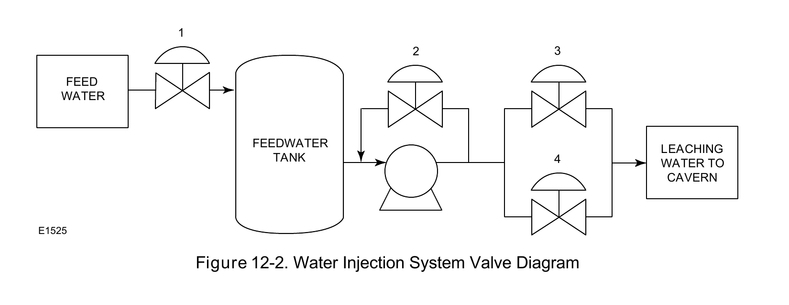

Formation-Type Classification

The water-injection valve diagram is the real zoom-in on the salt-cavern-only loop — concrete hardware for a sub-process that literally does not exist at two of the three formation types.
Fisher Control Valve Sourcebook — Oil & Gas (© 2013 Fisher), Chapter 12 "Natural Gas Storage," Figure 12-2 (drawing number E1525, printed p. 12-3) — "Figure 12-2. Water Injection System Valve Diagram." — used directly. Component Index: ogas-cmp-water-injection-valve-diagram.